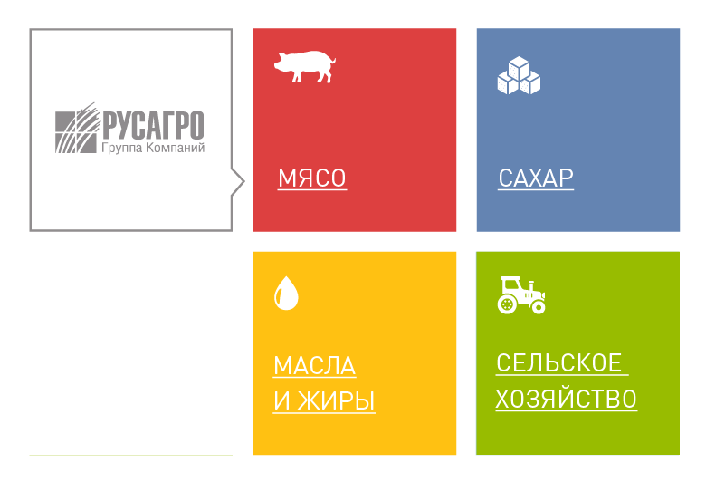

Группа Компаний «Русагро» - это крупнейший вертикальный агрохолдинг России. "Русагро" занимает лидирующие позиции в производстве сахара, свиноводстве, растениеводстве и масложировом бизнесе. Земельный банк группы – 637 тыс. га. В 2015 г. по версии ряда инвестиционных банков Группа Компаний «Русагро» была признана одной из самых прибыльных и быстрорастущих компаний мира в потребительском сегменте в СНГ. Акции компании торгуются на Лондонской и Московской биржах.
Основные активы Группы Компаний «Русагро» расположены в Белгородской, Тамбовской, Свердловской, Самарской, Саратовской, Воронежской, Курской и Орловской областях, а также в Приморском крае, что обеспечивает региональную диверсификацию бизнеса. Штаб-квартира холдинга находится в Тамбове. В Москве расположено обособленное подразделение Группы Компаний "Русагро".
Во всех бизнес-направлениях группа активно внедряет современные мировые технологии как с точки зрения оборудования, так и с точки зрения управленческих практик.
География продаж «Русагро» постоянно расширяется. В настоящее время компания реализует продукцию более чем в 80 регионах России и более чем в 60 странах мира.
Продукция «Русагро» продается под следующими торговыми марками:
| Сахарный бизнес | Масложировой бизнес | Мясной бизнес |
|---|---|---|
| Русский сахар | Я люблю готовить | Слово мясника |
| Чайкофский | ЕЖК | |
| Брауни | Мечта хозяйки | |
| Mon Cafe | Щедрое лето | |
| Теплые традиции | Россиянка | |
| Маслава | ||
| Формула чистоты |
В компании работают около 20 тыс. человек. Группа рассматривает своих сотрудников как главную и самостоятельную ценность и предоставляет им возможность реализовать свой потенциал, совершенствовать имеющиеся знания и навыки, а также участвовать в интересных инновационных проектах.
Неотъемлемой и важной частью деятельности Группы Компаний «Русагро» является корпоративная социальная ответственность. Компания способствует развитию регионов своего присутствия, заботится о защите окружающей среды, осуществляет профессиональное управление охраной здоровья сотрудников и безопасностью труда, своевременно выплачивает налоги и заработную плату, а также осуществляет широкую благотворительную деятельность, направленную на развитие образования.
История одного из крупнейших вертикально интегрированных агропромышленных холдингов России и СНГ началась в 1995 году с операций по импорту сахара, а затем импорту и переработке сахара-сырца в РФ. Вскоре началась деятельность по формированию холдинга, которую можно разделить на следующие основные этапы:

1997 - 2003: Приобритение активов
2004 - 2005: Создание холдинга
2006 - 2007: Консолидация и расширение
2008 - 2010: Рост и завоевание рынка лидерства на ключевых рынках
2011 - 2013: Выход на международный рынок акций
2014 - 2015
2016 - 2017
2018 - 2019
2020